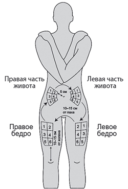
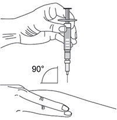
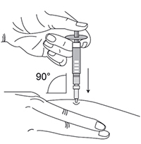

|
 |
| АЛЬГЕРОН® (ALGERON) cepeginterferon alfa-2b раствор д/п/к введения | ||||||||||||||||||||||||||||||||||||||||||||||||||||||||||||||||||||||||||||||||||||||||||||||||||||||||||||||||||||||||||||||||||||||||||||||||||||||||||||||||||||||||||||||||||||||||||||||||||||||||||||||||||||||||||||||||||||||||||||||||||||||||||||||||||||||||||||||||||||||||||||||||||||||||||||||||||||||||||||||||||||||||||||||||||||||||||||||||||||||||||||||||||||||||||||||||||||||||||||||||||||||||||||||||||||||||||||||||||||||||||||||||||||||||||||||||||||||||||||||||||||||||||||||||
|
Клинико-фармакологическая группа: Интерферон. Иммуномодулирующий препарат с противовирусным действием Номер и дата регистрации: ЛП-002017 от 28.02.13 Код ATX: L03AB14 |
Владелец регистрационного удостоверения: зарегистрировано и произведено Представительство: | |||||||||||||||||||||||||||||||||||||||||||||||||||||||||||||||||||||||||||||||||||||||||||||||||||||||||||||||||||||||||||||||||||||||||||||||||||||||||||||||||||||||||||||||||||||||||||||||||||||||||||||||||||||||||||||||||||||||||||||||||||||||||||||||||||||||||||||||||||||||||||||||||||||||||||||||||||||||||||||||||||||||||||||||||||||||||||||||||||||||||||||||||||||||||||||||||||||||||||||||||||||||||||||||||||||||||||||||||||||||||||||||||||||||||||||||||||||||||||||||||||||||||||||||
Форма выпуска, состав и упаковка Раствор для п/к введения прозрачный, от бесцветного до светло-желтого цвета.
Вспомогательные вещества: натрия ацетата тригидрат - 0.115 мг, уксусная кислота ледяная - до pH 5.0, маннитол - 54.47 мг, L-метионин - 0.2 мг, динатрия эдетата дигидрат - 0.005 мг, вода д/и - до 1 мл. 1 мл - шприцы трехкомпонентные из бесцветного стекла (1) - упаковки ячейковые контурные (1) - пачки картонные. | ||||||||||||||||||||||||||||||||||||||||||||||||||||||||||||||||||||||||||||||||||||||||||||||||||||||||||||||||||||||||||||||||||||||||||||||||||||||||||||||||||||||||||||||||||||||||||||||||||||||||||||||||||||||||||||||||||||||||||||||||||||||||||||||||||||||||||||||||||||||||||||||||||||||||||||||||||||||||||||||||||||||||||||||||||||||||||||||||||||||||||||||||||||||||||||||||||||||||||||||||||||||||||||||||||||||||||||||||||||||||||||||||||||||||||||||||||||||||||||||||||||||||||||||||
| ||||||||||||||||||||||||||||||||||||||||||||||||||||||||||||||||||||||||||||||||||||||||||||||||||||||||||||||||||||||||||||||||||||||||||||||||||||||||||||||||||||||||||||||||||||||||||||||||||||||||||||||||||||||||||||||||||||||||||||||||||||||||||||||||||||||||||||||||||||||||||||||||||||||||||||||||||||||||||||||||||||||||||||||||||||||||||||||||||||||||||||||||||||||||||||||||||||||||||||||||||||||||||||||||||||||||||||||||||||||||||||||||||||||||||||||||||||||||||||||||||||||||||||||||
Описание препарата основано на официально утвержденной инструкции по применению и утверждено компанией-производителем для издания 2021 г. | ||||||||||||||||||||||||||||||||||||||||||||||||||||||||||||||||||||||||||||||||||||||||||||||||||||||||||||||||||||||||||||||||||||||||||||||||||||||||||||||||||||||||||||||||||||||||||||||||||||||||||||||||||||||||||||||||||||||||||||||||||||||||||||||||||||||||||||||||||||||||||||||||||||||||||||||||||||||||||||||||||||||||||||||||||||||||||||||||||||||||||||||||||||||||||||||||||||||||||||||||||||||||||||||||||||||||||||||||||||||||||||||||||||||||||||||||||||||||||||||||||||||||||||||||
Фармакологическое действие |
Фармакокинетика |
Показания |
Режим дозирования |
Побочное действие |
Противопоказания |
Беременность и лактация |
Особые указания |
Передозировка |
Лекарственное взаимодействие |
Условия хранения и сроки годности |
Условия реализации
Фармакологическое действие
Цепэгинтерферон альфа-2b образуется путем присоединения к молекуле интерферона альфа-2b полимерной структуры - полиэтиленгликоля (ПЭГ) с молекулярной массой 20 кДа. Биологические эффекты препарата Альгерон® обусловлены интерфероном альфа-2b. Интерферон альфа-2b производится биосинтетическим методом по технологии рекомбинантной ДНК и вырабатывается штаммом бактерии Escherichia coli, в которую методами генной инженерии введен ген человеческого интерферона альфа-2b. Интерфероны оказывают противовирусное, иммуномодулирующее и антипролиферативное действие. Противовирусный эффект интерферона альфа-2b обусловлен связыванием его со специфическими клеточными рецепторами, что в свою очередь запускает сложный механизм последовательных внутриклеточных реакций, включающих индукцию определенных ферментов (протеинкиназа R, 2'-5'-олигоаденилатсинтетаза и белки Мх). В результате происходит подавление транскрипции вирусного генома и ингибирование синтеза вирусных белков. Иммуномодулирующее действие проявляется, в первую очередь, усилением клеточно-опосредованных реакций иммунной системы. Интерферон повышает цитотоксичность Т-лимфоцитов и естественных киллеров, фагоцитарную активность макрофагов, способствует дифференцировке Т-хелперов, защищает Т-клетки от апоптоза. Иммуномодулирующее действие интерферона обусловлено также влиянием на продукцию ряда цитокинов (интерлейкинов, интерферона гамма). Все эти эффекты интерферона могут опосредовать его терапевтическую активность. Препараты пегилированного интерферона альфа вызывают возрастание концентрации эффекторных белков, таких как сывороточный неоптерин и 2'-5'-олигоаденилатсинтетаза. При изучении фармакодинамики препарата Альгерон® при однократном введении добровольцам отмечалось дозозависимое увеличение сывороточной концентрации неоптерина, максимальный прирост которой достигался через 48 ч. При введении препарата Альгерон® 1 раз в неделю в дозе 1.5 мкг/кг сывороточная концентрация неоптерина у больных хроническим гепатитом С поддерживалась на постоянно высоком уровне. Так же как немодифицированный интерферон альфа-2b, Альгерон® обладал противовирусной активностью в экспериментах in vitro. Фармакокинетика
В доклинических экспериментах было показано, что пегилирование молекулы интерферона альфа-2b приводит к значительному замедлению всасывания из места введения, увеличению Vd, уменьшению клиренса. Уменьшение клиренса приводит более чем к 10-кратному увеличению длительности терминального Т1/2 по сравнению с немодифицированным интерфероном альфа-2b (32 ч против 2.2 ч). Выведение препарата Альгерон® происходило в течение >153 ч (6.5 дней). При изучении фармакокинетики препарата Альгерон® при однократном введении добровольцам в терапевтической дозе 1.5 мкг/кг совместно с рибавирином Сmax в сыворотке достигалась в среднем через 31 (18-48) ч после введения и составляла 1401±233 (1250-1803) пкг/мл. AUC(0-168 ч) составляла в среднем 144212±49839 (106845–226062) пкг/мл/ч. Клиренс препарата (Cl) в среднем составлял 9.9±3.2 (5.2–13) мл/(ч×кг), T1/2 - 57.8±8.4 (48-66.5) ч. Значение константы элиминации (Кеl) в среднем составляло 0.0124±0.002 ч-1. При введении препарата Альгерон® п/к 1 раз в неделю в рамках комбинированной терапии хронического гепатита С наблюдалось дозозависимое постепенное увеличение концентрации препарата до 8 недели, после чего дальнейшей кумуляции до 12 недель терапии препаратом Альгерон® не наблюдалось. Фармакокинетика у особых групп пациентов Пациенты с нарушением функции почек. Пациентам, у которых КК составляет менее 50 мл/мин, комбинированная терапия препаратом Альгерон® и рибавирином противопоказана. Пациентам с почечной недостаточностью средней и тяжелой степени необходимо проводить тщательное наблюдение и при возникновении побочных реакций снижать дозу препарата Альгерон®. Пациенты с нарушением функции печени. У пациентов с компенсированным циррозом печени фармакокинетические характеристики такие же, как у пациентов без цирроза. Поскольку применение препарата Альгерон® противопоказано у моноинфицированных пациентов с декомпенсированным циррозом печени (класс В и С по классификации Чайлд-Пью или кровотечение из варикозно расширенных вен) и у пациентов с ко-инфекцией ВИЧ/хронический гепатит С с циррозом печени с наличием печеночной недостаточности (индекс Чайлд-Пью ≥6), фармакокинетика препарата у таких пациентов не изучалась. Пациенты пожилого возраста. Фармакокинетика у пациентов старше 70 лет не изучалась. Показания
Режим дозирования
Препарат Альгерон® вводится п/к, в область передней брюшной стенки или бедра. Рекомендуется чередовать места для инъекции. Терапия должна быть начата врачом, имеющим опыт лечения пациентов с гепатитом С, и в дальнейшем проводиться под его контролем. При комбинированной терапии с рибавирином Альгерон® применяется у пациентов с хроническим гепатитом С, в т.ч. с клинически стабильной ко-инфекцией ВИЧ, в виде п/к инъекции в дозе 1.5 мкг/кг массы тела 1 раз в неделю. Режим дозирования препарата Альгерон® указан в таблице 1. Таблица 1. Режим дозирования препарата Альгерон® у пациентов с хроническим гепатитом С, в т.ч. с клинически стабильной ко-инфекцией ВИЧ
Каждый шприц с препаратом Альгерон® предназначен только для однократного применения. Не следует смешивать раствор, содержащийся в шприце, или вводить его параллельно с каким-либо другим препаратом. Препарат Альгерон® нельзя вводить в/в. Рекомендации по применению для пациентов 1. Выбрать удобное время проведения инъекции. Инъекции желательно делать вечером перед сном. 2. Перед введением препарата тщательно вымыть руки водой с мылом. 3. Взять одну контурную ячейковую упаковку с заполненным шприцем из картонной пачки, которая должна храниться в холодильнике, и выдержать ее при комнатной температуре в течение нескольких минут для того, чтобы температура препарата сравнялась с температурой окружающего воздуха. В случае появления конденсата на поверхности шприца следует подождать еще несколько минут до тех пор, пока конденсат не испарится. 4. Перед использованием следует осмотреть раствор в шприце. При наличии взвешенных частиц или изменении цвета раствора, или повреждении шприца препарат Альгерон® не следует применять. Если появилась пена, что бывает когда шприц трясут или сильно покачивают, следует подождать, пока осядет пена. 5. Выбрать область тела для инъекции. Альгерон® вводится в подкожную жировую клетчатку (жировой слой между кожей и мышечной тканью), поэтому следует выбирать места с рыхлой клетчаткой вдали от мест растяжения кожи, нервов, суставов и сосудов (рис. 1 – одна из четырех возможных областей для инъекции):
Рис. 1. Схема расположения мест инъекций  Не следует выбирать для инъекции болезненные точки, обесцвеченные, покрасневшие участки кожи или области с уплотнениями и узелками. Каждый раз следует выбирать новое место для укола, так можно уменьшить неприятные ощущения и боль на участке кожи в месте инъекции. Внутри каждой инъекционной области есть много точек для укола. Необходимо постоянно менять точки инъекций внутри конкретной области. 6. Подготовка к инъекции. Взять подготовленный шприц в ведущую руку. Снять защитный колпачок с иглы. 7. Количество раствора препарата Альгерон®, которое нужно ввести при проведении инъекции, зависит от рассчитанной врачом дозы. Доза препарата Альгерон® выражается в мкг и рассчитывается с учетом массы тела. Не следует изменять самостоятельно дозу препарата Альгерон®. Не хранить препарат, оставшийся в шприце, для повторного использования. В зависимости от дозы, которую прописал врач, может потребоваться удалить лишний объем раствора препарата из шприца. В случае такой необходимости следует медленно и аккуратно нажимать на поршень шприца для удаления лишнего количества раствора. Необходимо давить на поршень до тех пор, пока поршень не дойдет до необходимой отметки на поверхности шприца. 8. Предварительно продезинфицировав участок кожи, куда будет введен препарат Альгерон®, слегка собрать кожу в складку большим и указательным пальцами (рис. 2). 9. Располагая шприц перпендикулярно месту инъекции, ввести иглу в кожу под углом 90° (рис. 3). Препарат следует вводить, равномерно нажимая на поршень шприца вниз до конца (до его полного опорожнения). Рис. 2  Рис. 3  10. Удалить шприц с иглой движением вертикально вверх. 11. Использованные шприцы следует выбрасывать только в специально отведенное место, недоступное для детей. 12. Если пациент забыл ввести препарат Альгерон®, необходимо сделать инъекцию немедленно, как только он вспомнит об этом. Не допускается вводить двойную дозу препарата. Не следует прекращать применение препарата Альгерон® без консультации с врачом. При необходимости допустимо однократное хранение пациентами невскрытого шприца в защищенном от света месте не более 30 суток при температуре не выше 25°С. Дату начала хранения при комнатной температуре следует отмечать на упаковке. Рибавирин следует принимать внутрь, во время еды, ежедневно. Суточная доза рибавирина рассчитывается в зависимости от массы тела (см. таблицу 2). Таблица 2. Режим дозирования рибавирина при комбинированной терапии с препаратом Альгерон® у пациентов с хроническим гепатитом С, в т.ч. с клинически стабильной ко-инфекцией ВИЧ
Продолжительность лечения у пациентов с хроническим гепатитом С Продолжительность лечения зависит от генотипа вируса. Генотип HCV1. Наличие раннего вирусологического ответа (исчезновение HCV РНК либо снижение вирусной нагрузки на 2 log10 (в 100 раз) и более к 12 неделе лечения) может прогнозировать достижение устойчивого ответа. При отсутствии раннего вирусологического ответа достижение ремиссии маловероятно. В клинических исследованиях применения пэгинтерферона альфа при хроническом гепатите С устойчивый ответ достигался лишь у 2% пациентов с отрицательным ранним ответом. При достижении раннего вирусологического ответа терапию рекомендуется продолжать еще в течение 9 месяцев (общая продолжительность лечения 48 недель). Необходимо рассмотреть вопрос о прекращении терапии, если через 12 недель лечения не достигается ранний вирусологический ответ или через 24 недели терапии РНК HCV поддается обнаружению. Генотип HCV2 и 3. Если к 12 неделе лечения будет достигнут ранний вирусологический ответ (исчезновение HCV РНК либо снижение вирусной нагрузки на 2 log10 (в 100 раз) и более), рекомендуется проводить лечение на протяжении еще 12 недель (общая продолжительность лечения 24 недели). Более продолжительная терапия не имеет преимуществ. Генотип HCV4. В целом, пациенты с генотипом 4 трудно поддаются лечению. Отсутствие специальных исследований обусловливает возможность применения той же тактики лечения, что и при генотипе 1. Продолжительность лечения у пациентов с ко-инфекцией ВИЧ/хронический гепатит С Рекомендуемая продолжительность лечения составляет 48 недель, независимо от генотипа вируса гепатита С. Коррекция режима дозирования При возникновении нежелательных явлений или отклонений лабораторных показателей средней степени тяжести необходимо снизить дозы препарата Альгерон® или рибавирина, либо приостановить лечение. При нормализации состояния или лабораторных показателей можно рассмотреть вопрос о повышении дозы, вплоть до первоначальной. Если после коррекции дозы переносимость терапии не улучшится, лечение рекомендуется прекратить. Гематологические нарушения. При снижении в периферической крови числа лейкоцитов менее 1.5×109/л, нейтрофилов менее 0.75×109/л, числа тромбоцитов менее 50×109/л рекомендуется снизить дозу препарата Альгерон® на величину, равную 1/3 от терапевтической дозы (1/3 ТД). Если число нейтрофилов и тромбоцитов не повышается, дозу препарата Альгерон® рекомендуется снизить еще на 1/3 ТД. Повышать дозу рекомендуется, если число лейкоцитов превысит 2.0×109/л, нейтрофилов – 1×109/л, а тромбоцитов – 90×109/л на протяжении не менее 4 недель. Коррекция дозы рибавирина. При снижении гемоглобина до уровня менее 100 г/л дозу рибавирина рекомендуется снизить до 600 мг/сут. Лечение в прежней дозе можно возобновить после того, как уровень гемоглобина превысит 100 г/л на протяжении не менее 4 недель. При снижении уровня гемоглобина менее 85 г/л Альгерон® и рибавирин необходимо отменить. У пациентов с заболеваниями сердечно-сосудистой системы (в фазе компенсации) при снижении гемоглобина на ≥20 г/л в течение любых 4 недель лечения рекомендуется снизить дозу препарата Альгерон® до половины терапевтической и рибавирина до 600 мг/сут и постоянно использовать сниженную дозу. Если уровень гемоглобина у пациентов с заболеваниями сердечно-сосудистой системы (в фазе компенсации) менее 120 г/л через 4 недели после снижения дозы – введение препарата Альгерон® и прием рибавирина отменяют. После прекращения приема рибавирина при нормализации уровня гемоглобина возможно возобновление лечения в сниженной дозе – 600 мг/сут, без дальнейшего повышения дозы. Применение у особых групп пациентов Пациенты пожилого возраста Коррекции дозы у пациентов пожилого возраста не требуется. Дети У детей и подростков в возрасте до 18 лет эффективность и безопасность препарата Альгерон® в комбинации с рибавирином не изучалась. Препарат противопоказан для применения у детей младше 18 лет. Нарушения функции печени При компенсированном циррозе печени коррекции доз препарата Альгерон® не требуется. При декомпенсированном циррозе печени (класс В и С по классификации Чайлд-Пью или кровотечение из варикозно расширенных вен) применение препарата противопоказано. Если концентрация свободного билирубина повышается до 85.5 мкмоль/л, дозу рибавирина рекомендуется снизить до 600 мг/сут. При прогрессирующем повышении активности АЛТ или АСТ более чем в 2 раза от исходного значения или более чем в 10 раз от ВГН, введение препарата Альгерон® и прием рибавирина отменяют. Если повышается концентрация связанного билирубина более чем в 2.5 раза от ВГН или свободного билирубина >68.4 мкмоль/л в течение не менее 4 недель с признаками декомпенсации функции печени, Альгерон® и рибавирин необходимо отменить. Почечная недостаточность При назначении комбинированной терапии при легкой почечной недостаточности (КК >50 мл/мин) необходимо соблюдать осторожность в отношении развития анемии. При КК менее 50 мл/мин комбинированная терапия препаратом Альгерон® и рибавирином противопоказана. Если во время терапии концентрация креатинина повышается >0.177 ммоль/л, Альгерон® и рибавирин необходимо отменить. Пациенты с депрессией При депрессии легкой степени коррекции дозы не требуется. При развитии депрессии средней тяжести дозу препарата Альгерон® рекомендуется снизить на 1/3 ТД, если требуется – еще на 1/3 ТД. Если состояние не меняется, лечение рекомендуется продолжать в сниженной дозе. Если наступает улучшение, которое отмечается на протяжении не менее 4 недель, можно повышать дозу препарата Альгерон®. При развитии депрессии тяжелой степени, а также суицидальных мыслей необходимо отменить Альгерон® и рибавирин и проводить специфическое лечение под наблюдением психиатра. Таблица 3. Алгоритм коррекции доз препарата Альгерон® и рибавирина при возникновении побочных реакций
* У пациентов с заболеваниями сердечно-сосудистой системы (в фазе компенсации) при снижении гемоглобина на ≥20 г/л в течение любых 4 недель лечения рекомендуется снизить дозу препарата Альгерон® до половины терапевтической и рибавирина до 600 мг/сут и постоянно использовать сниженную дозу. Если уровень гемоглобина у пациентов с заболеваниями сердечно-сосудистой системы (в фазе компенсации) менее 120 г/л через 4 недели после снижения дозы – введение препарата Альгерон® и прием рибавирина отменяют. ** Рибавирин в дозе 600 мг/сут принимают по 1 капс. 200 мг утром и 2 капс. по 200 мг вечером, во время еды. *** Первое снижение дозы препарата Альгерон® на 1/3 ТД (до 1.0 мкг/кг/нед.), второе снижение (при необходимости) препарата Альгерон® - уменьшение еще на 1/3 ТД (до 0.5 мкг/кг/нед.). Побочное действие
При проведении комбинированной терапии препаратом Альгерон® в дозе 1.5 мкг/кг/нед. и рибавирином побочные реакции в основном были легкими или умеренно выраженными и не требовали прекращения лечения. Ниже приведены сведения о нежелательных реакциях в соответствии с терминологией MedDRA. Для описания частоты побочных реакций использовались следующие категории: очень часто (≥1/10), часто (≥1/100; <1/10), нечасто (≥1/1000; <1/100), редко (≥1/10000; <1/1000), очень редко (<1/10000). Таблица 4. Нежелательные реакции, наблюдавшиеся при применении препарата Альгерон®
* Снижение гематологических показателей, как правило, отмечалось в первые 4 недели лечения; они улучшались после коррекции дозы в пределах 4–8 недель. Тромбоцитопения менее 75×109/л наблюдалась примерно у 6% пациентов. В большинстве случаев изменения показателей крови удавалось устранить с помощью препаратов колониестимулирующего гранулоцитарного фактора или путем снижения дозы, поэтому выявленные отклонения не приводили к досрочному прекращению лечения. Модификация дозы рибавирина по поводу анемии требовалась примерно у 7% пациентов. При применении препарата Альгерон® в дозе 2.0 мкг/кг/нед. в сочетании с рибавирином помимо нежелательных явлений, которые наблюдались при применении препарата Альгерон® в дозе 1.5 мкг/кг/нед., были также отмечены следующие побочные реакции: Со стороны репродуктивной системы и молочной железы: часто - меноррагия. Общие расстройства и реакции в месте введения: часто - цианоз в месте введения, точечное кровоизлияние в месте введения, фурункул в месте введения. Побочные эффекты, наблюдавшиеся при применении препарата Альгерон® для лечения хронического гепатита С у ВИЧ-инфицированных пациентов Ниже представлены нежелательные реакции, наблюдавшиеся у пациентов с ко-инфекцией ВИЧ/хронический гепатит С, получавших терапию препаратом Альгерон® в комбинации с рибавирином, и отсутствовавшие у пациентов с моноинфекцией при применении препарата Альгерон®. Таблица 5. Нежелательные реакции, наблюдавшиеся у пациентов с ко-инфекцией ВИЧ/хронический гепатит С, получавших терапию препаратом Альгерон® в комбинации с рибавирином, и отсутствовавшие у пациентов с моноинфекцией при применении препарата Альгерон®
Нежелательные реакции по данным клинических исследований и в пострегистрационный период у взрослых пациентов, получавших как монотерапию, так и комбинированную с рибавирином терапию препаратом пэгинтерферона альфа-2b Наиболее частыми нежелательными реакциями, связанными с лечением, наблюдавшимися в клинических исследованиях при применении пэгинтерферона альфа-2b в комбинации с рибавирином у более половины всех пациентов, были усталость, головная боль и реакции в месте инъекции. У более чем 25% наблюдались тошнота, озноб, бессонница, анемия, повышение температуры тела, миалгия, астения, боль, алопеция, анорексия, снижение массы тела, депрессия, сыпь и раздражительность. Наиболее часто сообщалось о нежелательных реакциях легкой или умеренной степени тяжести, которые не требовали снижения дозы или отмены терапии. Усталость, алопеция, зуд, тошнота, анорексия, снижение массы тела, раздражительность и бессонница у пациентов, получавших монотерапию препаратом пэгинтерферона альфа-2b, наблюдались значительно реже, по сравнению с пациентами, получавшими комбинированную терапию. О следующих связанных с лечением нежелательных реакциях сообщали в клинических исследованиях или в пострегистрационный период у взрослых пациентов, получавших как монотерапию, так и комбинированную с рибавирином терапию пэгинтерфероном альфа-2b. Эти реакции перечислены в таблице 6 в соответствии с системно-органными классами и частотой: очень часто (≥1/10), часто (≥1/100 и <1/10), нечасто (≥1/1000 и <1/100), редко (≥1/10000 и <1/1000), очень редко (<1/10000), неизвестно (частота не может быть оценена на основании имеющихся данных). В каждом ряду нежелательные реакции расположены в порядке убывания серьезности. Таблица 6. Нежелательные реакции, о которых сообщалось в клинических исследованиях и пострегистрационный период, у взрослых пациентов, получавших как монотерапию, так и комбинированную с рибавирином терапию препаратом пэгинтерферона альфа-2b
* Данные нежелательные реакции были частыми у пациентов, получавших монотерапию препаратом пэгинтерферона альфа-2b, при проведении клинических исследований. Большинство случаев нейтропении и тромбоцитопении были легкой степени тяжести (1 или 2 степени по классификации ВОЗ). Наблюдалось несколько случаев нейтропении большей степени тяжести у пациентов, получавших рекомендованные дозы препарата пэгинтерферона альфа-2b в комбинации с рибавирином (3 степень по классификации ВОЗ - 21% (39 из 186 пациентов), 4 степень - 7% (13 из 186)). В клинических исследованиях примерно у 1.2% пациентов, получавших интерферон альфа-2b или препарат пэгинтерферона альфа-2b в комбинации с рибавирином, сообщалось об угрожающих жизни психиатрических состояниях во время лечения. Данные состояния включали мысли о самоубийстве и попытки самоубийства. Нежелательные реакции со стороны сердечно-сосудистой системы (ССС), в частности аритмия, скорее всего, связаны с предшествующим заболеванием ССС или ранее проводившейся терапией средствами, обладающими кардиотоксическим действием. Редко у пациентов, не имевших заболевания ССС в анамнезе, отмечалась кардиомиопатия, которая могла быть обратимой после прекращения терапии интерфероном альфа. Офтальмологические нарушения, о которых редко сообщалось на фоне терапии интерферонами альфа, включали ретинопатии (включая отек диска зрительного нерва), кровоизлияние в сетчатку глаза, закупорку вен или артерий сетчатки, очаговые изменения сетчатки, снижение остроты зрения или ограничение полей зрения, неврит зрительного нерва, отек диска зрительного нерва. При применении альфа-интерферонов сообщалось о широком спектре аутоиммунных и опосредованных иммунной системой организма нарушений, включая нарушения щитовидной железы, системную красную волчанку, развитие или ухудшение течения ревматоидного артрита, идиопатическую тромбоцитопеническую пурпуру и тромботическую тромбоцитопеническую пурпуру, васкулит, невропатии (включая мононевропатии и синдром Фогта-Коянаги-Харада. Указанные в данном разделе нежелательные реакции также могут наблюдаться при применении препарата Альгерон®. Хронический гепатит С с ко-инфекцией ВИЧ У ВИЧ-инфицированных пациентов с хроническим гепатитом С, получавших препарат пэгинтерферона альфа-2b в комбинации с рибавирином в крупных исследованиях, наблюдались следующие нежелательные эффекты с частотой выше 5%, которые отсутствовали у пациентов с моноинфекцией: кандидоз полости рта (14%), приобретенная липодистрофия (13%), снижение числа CD4-клеток (8%), снижение аппетита (8%), повышение активности ГГТ (9%), боль в спине (5%), повышение активности амилазы в крови (6%), повышение концентрации молочной кислоты в крови (5%), гепатит с цитолизом (6%), повышение активности липазы (6%) и боль в конечностях (6%). Митохондриальная токсичность У ВИЧ-инфицированных пациентов с хроническим гепатитом С, получавших нуклеозидные ингибиторы обратной транскриптазы в сочетании с рибавирином, описаны случаи митохондриальной токсичности и лактат-ацидоза. Лабораторные показатели Хотя нейтропения, тромбоцитопения и анемия встречались чаще у ВИЧ-инфицированных пациентов с хроническим гепатитом С, в большинстве случаев изменения со стороны системы крови удавалось устранить путем снижения дозы, поэтому они редко приводили к досрочному прекращению лечения. При лечении препаратом пэгинтерферона альфа-2b в комбинации с рибавирином изменения со стороны системы крови развивались чаще, чем при лечении интерфероном альфа-2b и рибавирином. В клиническом исследовании снижение абсолютного числа нейтрофилов <500/мм наблюдалось у 4% (8/194) пациентов, получавших препарат пэгинтерферона альфа-2b и рибавирин, снижение числа тромбоцитов <50000/мм3 - у 4% (8/194), анемия (гемоглобин <9.4 г/дл) - у 12% (23/194). Снижение числа CD4-лимфоцитов Лечение пэгинтерфероном альфа-2b в комбинации с рибавирином сопровождалось обратимым снижением абсолютного числа CD4+ клеток в течение первых 4 недель без уменьшения процентного содержания этих клеток. Число CD4+ клеток увеличивалось после снижения дозы или прекращения терапии. Комбинированная терапия препаратом пэгинтерферона альфа-2b и рибавирином не оказывала явного негативного влияния на виремию ВИЧ как во время лечения, так и после его завершения. Данные о безопасности лечения у ВИЧ инфицированных пациентов с гепатитом С с числом CD4+ клеток <200/мкл ограничены (N=25). Указанные в данном разделе нежелательные реакции также могут наблюдаться при применении препарата Альгерон® у пациентов с хроническим гепатитом С и ко-инфекцией ВИЧ. Противопоказания
С осторожностью
Применение при беременности и кормлении грудью
Женщины репродуктивного возраста/контрацепция у мужчин и женщин Следует соблюдать особенные меры предосторожности для предотвращения беременности у женщин, получающих комбинированную терапию препаратом Альгерон® и рибавирином, или у партнерш мужчин, получающих данную терапию. Женщины, способные к деторождению, должны использовать надежный способ контрацепции во время терапии и в течение 4 месяцев после завершения терапии. Пациенты мужского пола или их партнерши должны использовать надежный способ контрацепции во время терапии и в течение 7 месяцев после ее завершения. Беременность Применение препарата Альгерон® при беременности противопоказано. Тератогенные эффекты препарата Альгерон® не изучались. При лечении препаратом Альгерон® женщинам детородного возраста следует применять эффективные методы контрацепции. Применение интерферона альфа-2а в высоких дозах приводило к достоверному увеличению числа спонтанных абортов у животных. У потомства, рожденного в срок, тератогенных эффектов не отмечалось. Комбинация препарата Альгерон® с рибавирином противопоказана для назначения во время беременности. В исследованиях на животных рибавирин оказывал выраженные тератогенные эффекты и вызывал смерть плода. Рибавирин противопоказан беременным женщинам и мужчинам, партнерши которых беременны. Терапию рибавирином не следует назначать до получения отрицательного теста на беременность, проведенного непосредственно перед началом терапии. Женщины, способные к деторождению, или мужчины, партнерши которых способны к деторождению, должны быть проинформированы о тератогенных эффектах рибавирина и необходимости проведения эффективной контрацепции (не менее 2 способов) во время лечения и в течение 7 месяцев после окончания терапии. Период грудного вскармливания Применение препарата Альгерон® в период грудного вскармливания противопоказано. Нет данных о проникновении препарата Альгерон® в грудное молоко, поэтому во избежание нежелательного воздействия на ребенка следует отменить либо грудное вскармливание, либо терапию, с учетом потенциальных преимуществ для матери. Особые указания
Эффективность и безопасность препарата Альгерон® в монотерапии или комбинации с рибавирином у лиц моложе 18 лет, а также у пациентов после трансплантации печени или других органов не установлены. Препарат Альгерон® следует применять с осторожностью при таких заболеваниях, как ХОБЛ или сахарный диабет с тенденцией к развитию кетоацидоза. Необходимо также соблюдать осторожность у пациентов с нарушением свертываемости крови (например, при тромбофлебите, тромбоэмболии легочной артерии) или выраженной миелосупрессией. Психическая сфера и ЦНС Серьезные нарушения со стороны ЦНС, особенно депрессия, суицидальные мысли и попытки суицида, наблюдались у некоторых пациентов на фоне терапии препаратами интерферона альфа, а также после прекращения терапии (в основном в течение 6 месяцев). Другие нарушения со стороны ЦНС, включая агрессивное поведение (в некоторых случаях направленное на других людей, например, мысли об убийстве), биполярные расстройства, мании, спутанность сознания и изменение психического статуса, наблюдались у пациентов, получавших терапию интерфероном альфа. Следует тщательно наблюдать за пациентами для выявления любых признаков или симптомов психических расстройств. При появлении таких симптомов следует оценить потенциальную опасность и рассмотреть необходимость лекарственной терапии данных состояний. При сохранении или ухудшении психических расстройств или появлении суицидальных мыслей рекомендуется прекратить терапию препаратом Альгерон® и продолжить наблюдение за пациентом, в случае необходимости обеспечить консультацию психиатра. У некоторых пациентов, обычно у пожилых, получавших интерферон альфа в высоких дозах для терапии онкологического заболевания, наблюдались нарушение сознания, кома, включая случаи развития энцефалопатии. Хотя эти нарушения, как правило, были обратимы, у некоторых пациентов для их полного обратного развития требовалось до 3 недель. Очень редко при применении интерферона альфа в высоких дозах у пациентов развивались эпилептические судороги. Пациенты с тяжелыми психическими расстройствами, в т.ч. в анамнезе При необходимости назначения препарата Альгерон® пациентам с тяжелыми психическими нарушениями (в т.ч. пациентам, имеющим указания на такие нарушения в анамнезе) лечение может быть начато только после проведения тщательного индивидуального обследования и соответствующей терапии психического расстройства. Пациенты, употребляющие наркотические вещества У пациентов, инфицированных вирусом гепатита С, употребляющих алкоголь и наркотические вещества (марихуана и прочие), риск развития расстройств психики (или ухудшения текущих) повышается при терапии интерфероном альфа. Если у таких пациентов терапия с применением интерферона альфа необходима, то перед началом терапии следует тщательно оценить наличие сопутствующих психических заболеваний и риск употребления наркотических веществ, провести адекватную терапию. При необходимости показано наблюдение психиатра или нарколога для проведения обследования, терапии и ведения таких пациентов. Необходимо тщательное наблюдение за такими пациентами во время и после завершения терапии интерфероном. Рекомендуется принять своевременные меры для предотвращения рецидива или усугубления психических расстройств, а также возобновления употребления наркотиков. Сердечно-сосудистая система Пациенты с сердечной недостаточностью, инфарктом миокарда и/или аритмиями (в т.ч. в анамнезе) должны находиться под постоянным наблюдением. У пациентов с заболеваниями сердца перед началом и во время лечения рекомендуется проводить ЭКГ. Аритмии (в основном наджелудочковые), как правило, поддаются обычной терапии, но могут потребовать отмены препарата Альгерон®. Анемия, вызванная приемом рибавирина, может усугубить течение сердечно-сосудистых заболеваний. В случае ухудшения течения сердечно-сосудистых заболеваний терапию следует прервать или отменить. Повышенная чувствительность В редких случаях терапия препаратами пэгинтерферона альфа осложнялась реакциями гиперчувствительности немедленного типа. При развитии анафилактических реакций, крапивницы, ангионевротического отека, бронхоспазма препарат отменяют и незамедлительно назначают соответствующую терапию. Преходящая сыпь не требует отмены терапии. Функция почек Рекомендуется проводить исследование функции почек у всех пациентов до начала терапии препаратом Альгерон®. При КК менее 50 мл/мин комбинированная терапия препаратом Альгерон® и рибавирином противопоказана. В случае повышения концентрации креатинина >0.177 ммоль/л в процессе проведения терапии введение препарата Альгерон® и прием рибавирина необходимо отменить. У пациентов со сниженной функцией почек, а также в возрасте старше 50 лет при применении препарата Альгерон® в комбинации с рибавирином следует тщательно отслеживать их состояние в отношении возможного развития анемии. Функция печени При развитии печеночной недостаточности лечение препаратом Альгерон® и рибавирином отменяют. Комбинированная терапия препаратом Альгерон® и рибавирином противопоказана пациентам с декомпенсированным циррозом печени (класс В и С по классификации Чайлд-Пью или кровотечение из варикозно расширенных вен). Лихорадка Лихорадка может наблюдаться в рамках гриппоподобного синдрома, который часто регистрируют при лечении интерферонами, тем не менее, необходимо исключить другие причины стойкой лихорадки. Гидратация Рекомендуется обеспечивать адекватную гидратацию пациентов, поскольку у некоторых пациентов при лечении пэгинтерфероном альфа-2b наблюдалась артериальная гипотензия, связанная с уменьшением объема жидкости в организме. Заболевания легких В редких случаях у пациентов, получавших интерферон альфа, в легких развивались инфильтраты неясной этиологии, пневмониты или пневмонии, в т.ч. с летальным исходом. При появлении лихорадки, кашля, одышки и других респираторных симптомов всем пациентам следует проводить рентгенографию грудной клетки. При наличии инфильтратов на рентгенограмме легких или признаков нарушения функции легких следует установить более тщательное наблюдение за пациентами и, при необходимости, отменить Альгерон®. Немедленная отмена интерферона и назначение ГКС приводят к исчезновению нежелательных явлений со стороны легких. Аутоиммунные нарушения При лечении интерфероном альфа в отдельных случаях отмечали появление аутоантител. Клинические проявления аутоиммунных заболеваний чаще возникают при лечении пациентов, предрасположенных к развитию аутоиммунных нарушений. При появлении симптомов, схожих с проявлениями аутоиммунных заболеваний, следует провести тщательное обследование пациента и оценить возможность продолжения терапии интерфероном. У пациентов с хроническим гепатитом С, получавших терапию интерферонами, сообщались случаи развития синдрома Фогта-Коянаги-Харада. Данный синдром является гранулематозным воспалительным заболеванием, влияющим на орган зрения, орган слуха, мягкие мозговые оболочки и кожу. В случае подозрения на синдром Фогта-Коянаги-Харада следует прекратить антивирусную терапию и рассмотреть необходимость применения ГКС. Псориаз и саркоидоз В связи с сообщениями об обострении течения псориаза или саркоидоза у пациентов, получавших терапию интерфероном альфа, применение препарата Альгерон® у пациентов с данными заболеваниями рекомендовано только в случаях, когда предполагаемая польза от лечения оправдывает потенциальный риск. При обострении псориаза или саркоидоза у пациентов, получающих терапию препаратом Альгерон®, должен быть рассмотрен вопрос об отмене препарата. Изменения со стороны органа зрения Нарушения со стороны органа зрения (включая кровоизлияние в сетчатку, экссудаты в сетчатке, обструкцию вен или артерий сетчатки) сообщались в редких случаях после терапии интерфероном альфа. Всем пациентам необходимо провести офтальмологическое обследование до начала терапии. Каждому пациенту, получающему терапию препаратом Альгерон®, следует провести офтальмологическое обследование в случае появления жалоб на снижение остроты зрения или ограничение полей зрения. Пациентам с заболеваниями, при которых могут происходить изменения сетчатки, например, сахарным диабетом или артериальной гипертензией, рекомендуется во время терапии препаратом Альгерон® регулярно проходить офтальмологический осмотр. При появлении или усугублении расстройств зрения следует рассмотреть вопрос о прекращении терапии препаратом Альгерон®. Изменения со стороны зубов и периодонта У пациентов, получавших комбинированную терапию пэгинтерфероном альфа-2b и рибавирином, отмечались патологические изменения со стороны зубов и околозубных тканей. Сухость во рту при длительной терапии может способствовать повреждению зубов и слизистой оболочки полости рта. Пациентам рекомендуется соблюдать гигиену полости рта и регулярно проходить осмотр у стоматолога. Состояние щитовидной железы Механизм влияния интерферона альфа на функцию щитовидной железы неизвестен. У пациентов хроническим гепатитом С, получавших интерферон альфа-2b, в 2.8% случаев развивались гипотиреоз или гипертиреоз. Эти нарушения контролировали с помощью стандартной терапии. До начала лечения препаратом Альгерон® у пациентов следует определить сывороточные концентрации ТТГ и при выявлении нарушений функции щитовидной железы назначить стандартную терапию. Концентрацию ТТГ следует определять также при появлении симптомов нарушения функции щитовидной железы на фоне лечения интерфероном альфа. Лечение препаратом Альгерон® не следует проводить, если активность ТТГ на нормальном уровне поддерживать не удается. Лабораторные исследования До начала лечения препаратом Альгерон® необходимо провести стандартные клинические и биохимические анализы крови. Также их рекомендуется проводить во время терапии каждые 2 недели (клинический анализ крови) и каждые 4 недели (биохимический анализ крови). Альгерон® можно применять при следующих лабораторных показателях: гемоглобин ≥100 г/л, число тромбоцитов >90×109/л, абсолютное число нейтрофилов – >1.5×109/л, концентрации ТТГ и тироксина в пределах нормы или функция щитовидной железы медикаментозно контролируется. Препарат Альгерон® следует применять с осторожностью при следующих значениях лабораторных показателей: абсолютное число нейтрофилов – <1.5×109/л, число тромбоцитов <90×109/л, гемоглобин <100 г/л. Применение препарата Альгерон® противопоказано при следующих значениях лабораторных показателей: абсолютное число нейтрофилов – <0.5×109/л, число тромбоцитов <25×109/л, гемоглобин <85 г/л. При выраженной гипертриглицеридемии, прежде чем корректировать дозу препарата Альгерон®, необходимо назначить диету или медикаментозную терапию с учетом концентрации триглицеридов в сыворотке крови натощак. После отмены препарата гипертриглицеридемия быстро исчезает. Терапия интерфероном альфа может сопровождаться развитием язвенного и геморрагического и/или ишемического колита в течение 12 недель с момента начала терапии. Абдоминальные боли, наличие крови в кале, лихорадка – типичные симптомы манифестации колита. При появлении соответствующих жалоб Альгерон® должен быть немедленно отменен. Восстановление обычно наступает через 1-3 недели после отмены препарата. При лечении пэгинтерфероном альфа-2а в комбинации с рибавирином отмечались случаи развития панкреатита, иногда фатального. При развитии симптомов панкреатита терапию препаратом Альгерон® и рибавирином следует отменить. При приеме препаратов интерферона альфа описаны серьезные инфекционные осложнения (бактериальные, вирусные, грибковые), иногда фатальные. Некоторые из них сопровождались развитием нейтропении. При возникновении тяжелых инфекционных осложнений следует отменить терапию и назначить соответствующее лечение. Ко-инфекция ВИЧ/хронический гепатит С Перед началом лечения следует внимательно ознакомиться с возможными побочными эффектами антиретровирусных препаратов, которые пациент будет принимать совместно с препаратами для терапии хронического гепатита С. У пациентов, одновременно получавших ставудин и интерферон с или без рибавирина, частота возникновения панкреатита и/или лактат-ацидоза составила 3%. Пациенты с ко-инфекцией ВИЧ/хронический гепатит С, ВААРТ, могут находиться в группе риска в отношении развития лактат-ацидоза. Поэтому следует соблюдать осторожность при добавлении препарата Альгерон® и рибавирина к ВААРТ (см. инструкцию по медицинскому применению рибавирина). Одновременное применение рибавирина и зидовудина не рекомендуется из-за повышенного риска возникновения анемии. Необходим тщательный мониторинг на предмет выявления признаков и симптомов печеночной декомпенсации (включая асцит, энцефалопатию, кровотечение из варикозно расширенных вен, нарушение синтетической функции печени; показатель ≥7 баллов по шкале Чайлд-Пью) у пациентов с ко-инфекцией. Показатель по шкале Чайлд-Пью не всегда достоверно отражает наличие печеночной декомпенсации и может изменяться под влиянием таких факторов, как повышенная концентрация непрямого (свободного) билирубина в крови, гипоальбуминемия вследствие медикаментозной терапии. При развитии печеночной декомпенсации терапию препаратом Альгерон® следует немедленно отменить. Следует проявлять осторожность при назначении препарата Альгерон® пациентам с низким уровнем CD4+ лимфоцитов. Недостаточно данных об эффективности и безопасности применения препаратов пегилированных интерферонов альфа у пациентов с ко-инфекцией ВИЧ/хронический гепатит С с количеством CD4+ лимфоцитов менее 200 клеток/мкл. Пересадка органов Эффективность и безопасность применения препарата Альгерон® (в комбинации с рибавирином или при монотерапии) для терапии гепатита С у реципиентов при пересадке органов не изучались. Предварительные данные свидетельствуют о том, что терапия интерфероном альфа может повысить риск отторжения трансплантата почки. Сообщалось также об отторжении трансплантата печени. Влияние на способность к управлению транспортными средствами и механизмами При проведении лечения возможно появление слабости, головокружения, сонливости, спутанности сознания. При возникновении данных явлений следует отказаться от вождения автомобиля или работы с машинами и механизмами. Передозировка
В клинических исследованиях препарата Альгерон® при применении дозы 2 мкг/кг, по сравнению с рекомендованной – 1.5 мкг/кг, чаще требовалось корректировать вводимые дозы вследствие дозозависимых нежелательных явлений. Лечение: специфический антидот отсутствует. В случае передозировки рекомендовано симптоматическое лечение и тщательное наблюдение за состоянием пациента. Лекарственное взаимодействие
Взаимодействие с лекарственными препаратами изучали только у взрослых пациентов. Телбивудин Клиническое исследование, в котором изучали комбинированное применение телбивудина (600 мг ежедневно) с пэгинтерфероном альфа-2а (180 мкг п/к, 1 раз в неделю), показало, что применение данной комбинации связано с повышенным риском развития периферической невропатии. Механизм данного явления неизвестен. Кроме того, безопасность и эффективность телбивудина в комбинации с интерферонами для лечения хронического гепатита В не были подтверждены. Совместное применение препарата Альгерон® и телбивудина противопоказано. Метадон У пациентов с хроническим гепатитом С, получающих постоянную поддерживающую терапию метадоном и не леченых пэгинтерфероном альфа-2b, терапия пегилированным интерфероном альфа-2b п/к в дозе 1.5 мкг/кг в неделю в течение 4 недель увеличивала AUC R-метадона приблизительно на 15% (95% ДИ AUC: 103-128%). Клиническая значимость этого изменения неизвестна, однако у данных пациентов следует наблюдать за признаками и симптомами увеличения седативного эффекта и угнетения дыхания. У пациентов, получающих высокую дозу метадона, следует тщательно оценить риск удлинения интервала QT. Влияние пэгинтерферона альфа-2b на совместно назначенные препараты Потенциальное взаимодействие пэгинтерферона альфа-2b с субстратами метаболических ферментов изучали при многократном применении в трех исследованиях клинической фармакологии. В этих исследованиях было изучено действие пэгинтерферона альфа-2b при его многократном введении у пациентов с гепатитом С в дозе 1.5 мкг/кг в неделю или у здоровых пациентов в дозе 1 мкг/кг в неделю или 3 мкг/кг в неделю (см. таблицу 7). Не было выявлено клинически значимого фармакокинетического взаимодействия между пэгинтерфероном альфа-2b и толбутамидом, мидазоламом и дапсоном; таким образом, коррекция дозы не требуется при совместном применении пэгинтерферона альфа-2b с препаратами, которые метаболизируются посредством изоферментов CYP2C9 или CYP3A4 и N-ацетилтрансферазы. При совместном применении пэгинтерферона алфа-2b с кофеином и дезипрамином незначительно увеличивается экспозиция кофеина и дезипрамина. Маловероятно, что уменьшение активности цитохрома Р450 клинически значимо при совместном применении препаратов пэгинтерферона альфа-2b с препаратами, метаболизирующимися посредством изоферментов CYP1A2 и CYP2D6, за исключением препаратов с узким окном терапевтического действия (см. таблицу 8). Таблица 7. Влияние пэгинтерферона альфа-2b на совместно применяемые препараты
N - количество пациентов; * Рассчитано на основе данных анализов мочи, полученных с интервалом в 48 ч. ** Рассчитано на основе данных анализов мочи, полученных с интервалом в 24 ч. Таблица 8. Меры предосторожности при совместном применении (препарат Альгерон® следует применять с осторожностью при совместном приеме с нижеуказанными препаратами)
Хронический гепатит С у ВИЧ-инфицированных пациентов Нуклеозидные аналоги Применение нуклеозидных аналогов по отдельности или в комбинации с другими нуклеозидами приводило к развитию лактат-ацидоза. In vitro рибавирин вызывал увеличение уровней фосфорилированных метаболитов пуриновых нуклеозидов. Этот эффект может способствовать повышению риска развития лактат-ацидоза под действием аналогов пуриновых нуклеозидов (например, диданозина или абакавира). Совместное применение рибавирина и диданозина не рекомендуется. Сообщалось о развитии митохондриальной токсичности, в частности лактат-ацидоза и панкреатита, в некоторых случаях с летальным исходом (см. инструкцию по применению рибавирина). Ухудшение течения анемии, связанное с приемом рибавирина, наблюдалось на фоне терапии ВИЧ с применением зидовудина, хотя точный механизм данного влияния не изучен. Совместное применение рибавирина и зидовудина не рекомендуется, т.к. приводит к повышенному риску развития анемии. Следует рассмотреть возможность замены зидовудина в комбинированной антиретровирусной терапии, если она уже проводится. Это особенно важно у пациентов с анемией, связанной с приемом зидовудина, в анамнезе. |
||||||||||||||||||||||||||||||||||||||||||||||||||||||||||||||||||||||||||||||||||||||||||||||||||||||||||||||||||||||||||||||||||||||||||||||||||||||||||||||||||||||||||||||||||||||||||||||||||||||||||||||||||||||||||||||||||||||||||||||||||||||||||||||||||||||||||||||||||||||||||||||||||||||||||||||||||||||||||||||||||||||||||||||||||||||||||||||||||||||||||||||||||||||||||||||||||||||||||||||||||||||||||||||||||||||||||||||||||||||||||||||||||||||||||||||||||||||||||||||||||||||||||||||||
Вернуться наверх |
||||||||||||||||||||||||||||||||||||||||||||||||||||||||||||||||||||||||||||||||||||||||||||||||||||||||||||||||||||||||||||||||||||||||||||||||||||||||||||||||||||||||||||||||||||||||||||||||||||||||||||||||||||||||||||||||||||||||||||||||||||||||||||||||||||||||||||||||||||||||||||||||||||||||||||||||||||||||||||||||||||||||||||||||||||||||||||||||||||||||||||||||||||||||||||||||||||||||||||||||||||||||||||||||||||||||||||||||||||||||||||||||||||||||||||||||||||||||||||||||||||||||||||||||
Copyright © Справочник Видаль «Лекарственные препараты в России», Москва, Россия